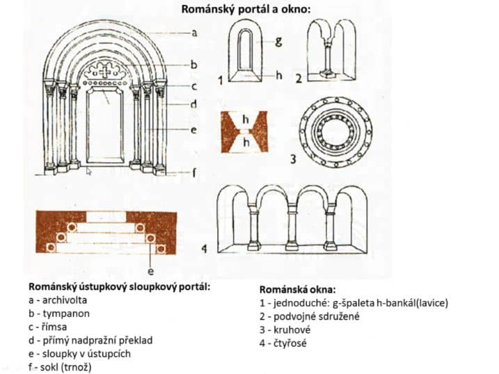

8. Románské umění v evropských a českých zemích
- odvozeno z “ROMA” → návrat ke starému římu
- cca 1000 - 1250
- Francie, Španělsko, Itálie
- vrcholný středověk
- rozvoj měst
- vznik církevních řádů (např. benediktini, templáři)
-
rozdělení na latinskou (západní) a řeckou (pravoslavnou)
církev
- 1095 → kontakt s islámským světem
- poutní kostely, kláštery
- hrady navazující na Falce
-
KLÁŠTER V CLUNY (střední FRA)
-
stejný princip jako předrománský (dvůr, ambit,
refektář, dormitář)
-
SANTIAGO DE COMPOSTELA (záp. ŠPA)
- Santiago → Sv. Jakub
- dnes se zde nachází barokní kostel
-
PISA
-
bazilika, baptisterium (křestní kaple), zvonice →
tzv. šikmá věž (kampanila)
Architektura
-
převážně baziliky (WESTWERK → občas jsou 2, objevují se i na
východě, transept, poprvé se objevuje více apsid)
- VALENÝ OBLOUK
- ústupkové portály
- výzdobné prvky → polychomovanost (barevnost)
- SLOUP → KRUH, PILÍŘ → ČTVEREC
- na konci se objevují valené oblouky a žebra

Sochařství
- převážně reliéfy, občas volné sochy
- často Madony → Panna Marie s narozeným Ježíšem
- LINEARITA - důraz na obrysovou linii
-
motiv posledního soudu
-
Kristus v
mandorle → svatozář kolem celé postavy
- pod ním rozdělení na dobro a zlo
-
po pravici Ráj (my vidíme vlevo) - dobro, uspořádání
-
po levici Peklo (my vidíme vpravo) - zatracení,
občas vládce Lucifer/Satan, chaos
- levitující postavy
České země
- Přemyslovci
-
návaznost na Velkou moravu
- Rotunda → kruhová stavba s apsidou
- Baziliky
- Malby
OBRÁZKY
- Rotunda ve Znojmě
-
Jakub u Kutné Hory, kostel
-
Pisa
- kampanela, zadní část baziliky s apsidou
-
Rukopisy
-
Tapiserie
- popis dobytí anglie s normany
Audio